Evidence first
报告只认同一轮数据不要拼接不同 record、不同场景或不同时间的结果。
Guided Experiment · Crosswalk
按照真实 Harness 和 Apollo 仿真界面完成一轮人行道场景实验。每一步都对应实际按钮与界面，截图用于辅助定位；实际运行和报告仍由本地 Harness 完成。
Step by step
Open Harness
在实验中心打开 Harness。首次点击需要允许浏览器打开 Apollo_Harness 本地应用。
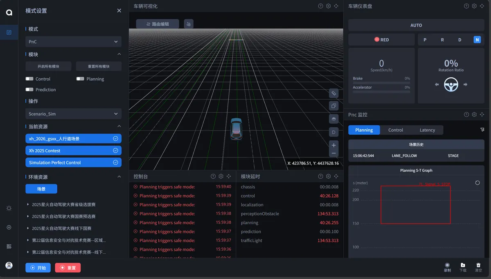
Start runtime
点击 Harness 中的启动仿真。系统会启动 WSL/Ubuntu、Docker、Apollo 容器和 DreamView，页面期间可能处于等待状态。
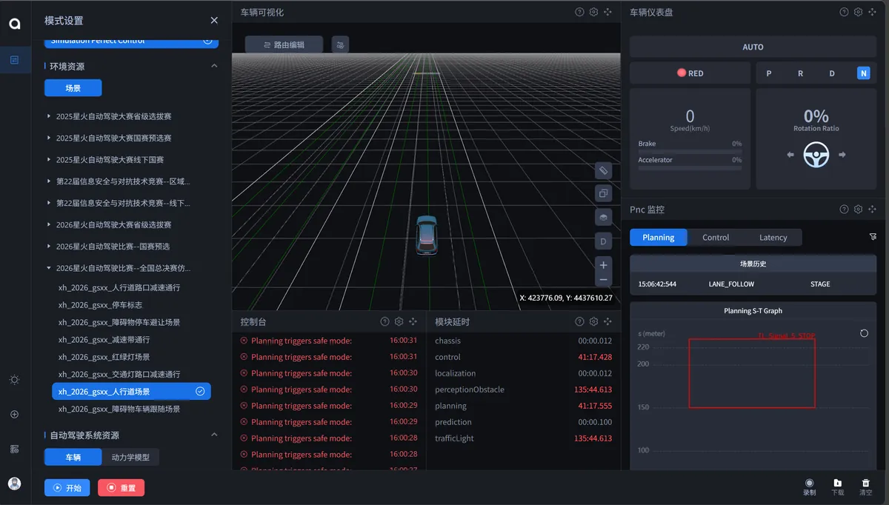
SimControl
DreamView 打开后，进入 SimControl，选择 scenario_sim。这是本轮真实场景运行的入口。
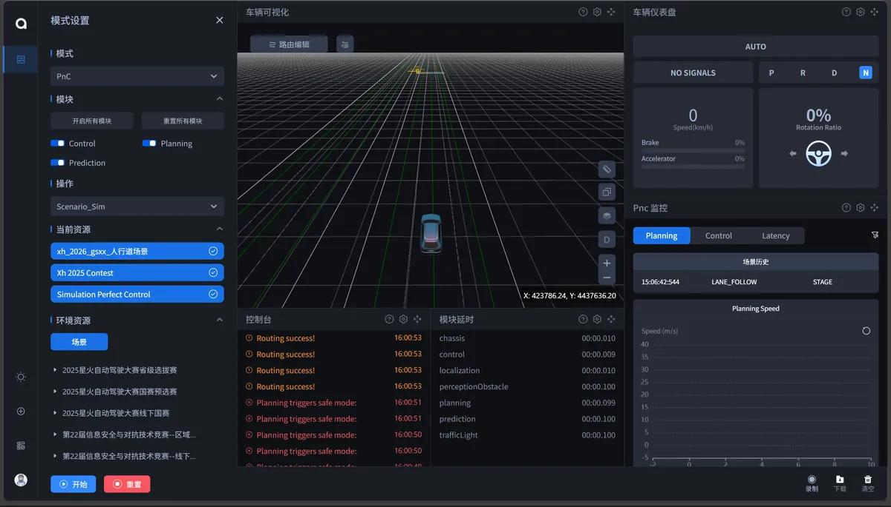
Map
选择人行道场景对应的地图。地图和场景必须匹配，否则停车距离、行人和停止线数据都会失去意义。
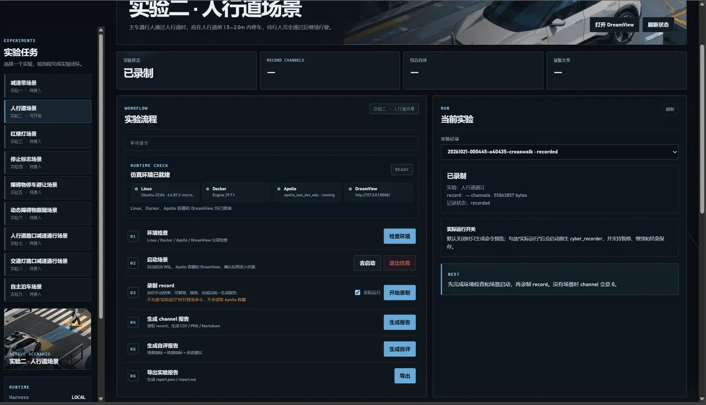
Modules
启动 Planning、Control 及其他场景需要的模块。确认主界面没有明显报错，再进入下一步。
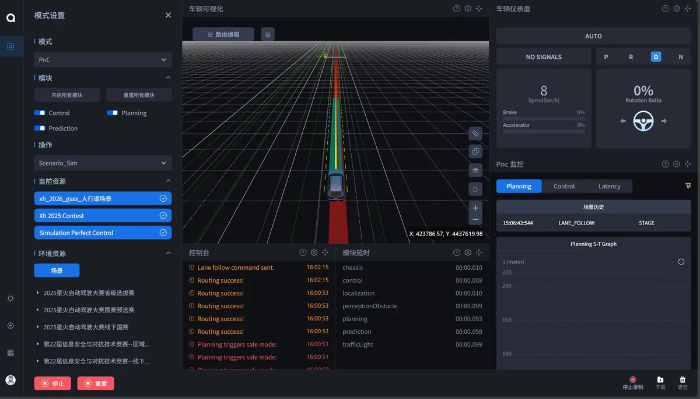
Record
回到 Harness，在录制步骤勾选“实际运行”，点击“开始录制”。录制会采集 planning、control、localization 等核心 channel。
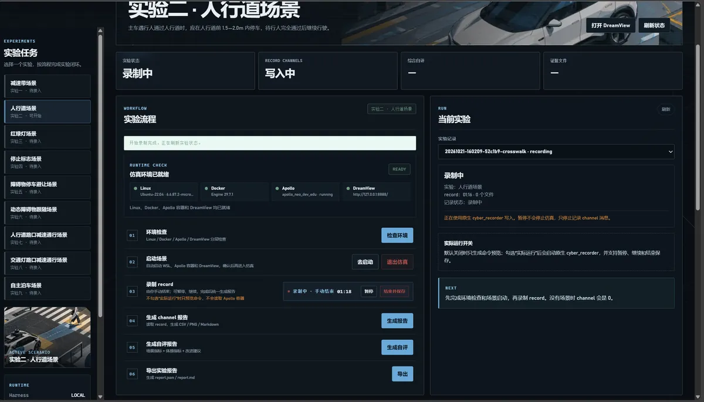
Run
回到 DreamView/SimControl 启动车辆运行，观察车辆接近人行横道、识别行人、减速停车和继续通行。
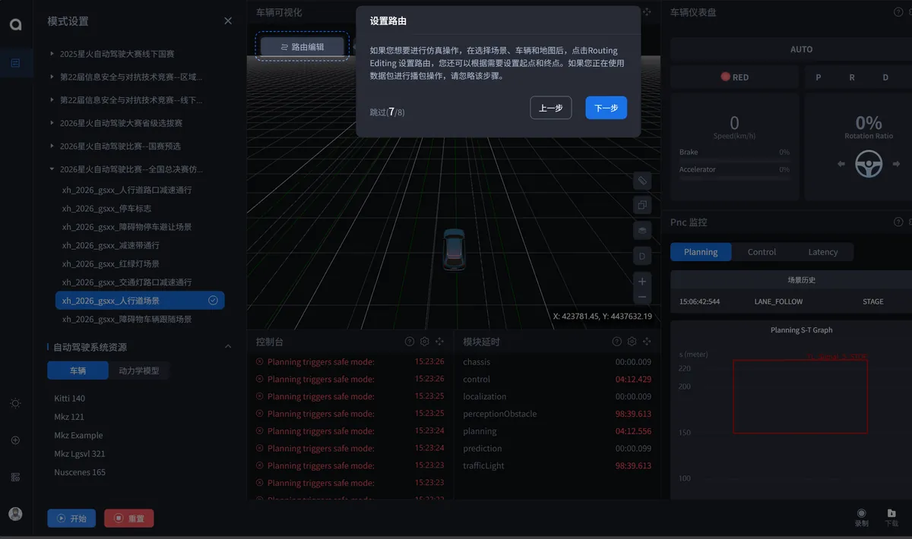
Stop record
车辆完成后回到 Harness，人工点击“结束并保存”，再点击“生成报告”。检查 record、CSV、图表和 channel 汇总是否生成。
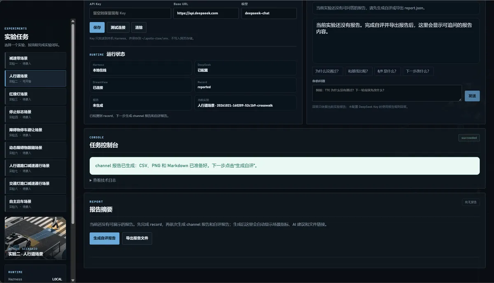
Self-eval
依次点击“生成自评”和“导出”，生成 report.json、report.md、selfeval.md 和证据文件。
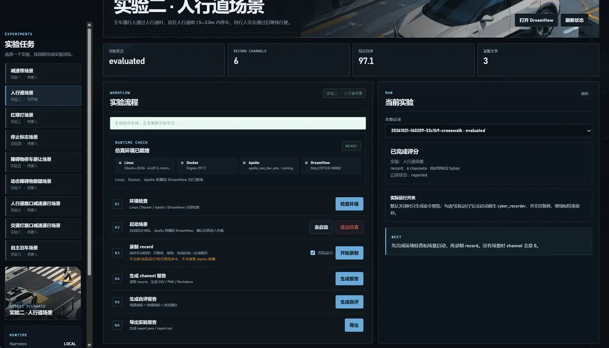
AI review
在 Harness 的 DeepSeek 设置中保存自己的 API Key，只保存在本机。随后围绕报告提问，例如“为什么没有通过？”或“下一轮先改什么？”。
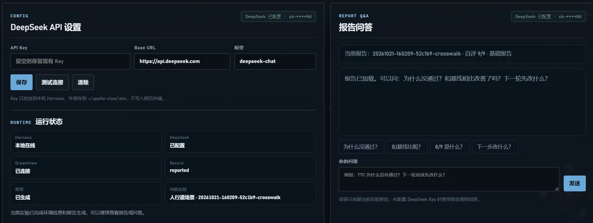
Web report
回到实验报告页，导入本轮 report.json，查看场景分、停车距离、过程证据和 AI 建议。确认页面显示的是同一轮实验数据。
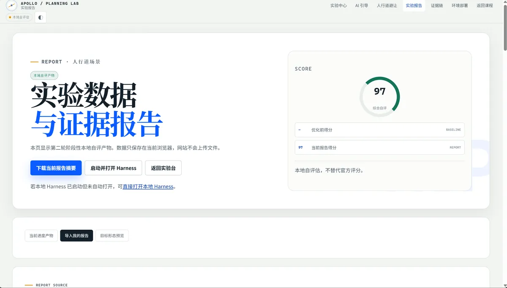
Evidence first
报告只认同一轮数据不要拼接不同 record、不同场景或不同时间的结果。
AI boundary
AI 不替代判断模型给解释和建议，学生确认操作，教师保留最终评价权。
Safety
不要跳过环境检查环境未就绪时先修复，不要用演示结果代替真实实验。